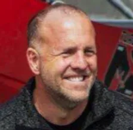

OUR MISSION
The Flying Cowboys are a group of back country aviation enthusiasts striving to increase their skills while promoting general aviation through continual training and sharing of their lessons learned through social media.
MIKE PATEU
SPANISH FORK, UT
2018 STOL DRAG WORLD CHAMPION
Mike Patey was born in Gresham, Oregon, along with twin brother, Mark, right in the middle of 11 children. He and his wife, Chandra, who is a pilot as well, have 4 children. His aviation journey began in a 1971 Cessna 172L in 2002. He subsequently earned his single/multi-engine land and sea, commercial, instrument, and rotorcraft ratings along with various endorsements. His natural energy and knack for engineering feed his love for the challenge to circumvent the norms and “build it better.” This drives his passion to create and build his own airplanes, which he uses for competitive racing, STOL, flying his family, business, and playing with his fellow “Flying Cowboys.” He holds several aviation records and enthusiastically shares his process and adventures via his YouTube channel.